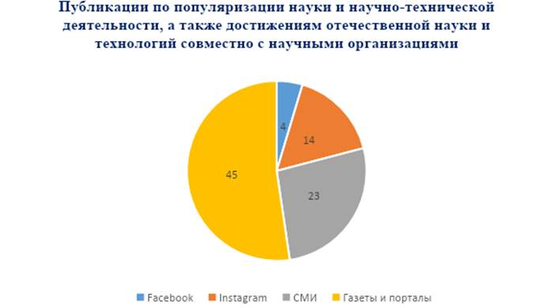

Данный отчет представляет анализ публикаций в СМИ и обсуждений в разнообразных медиа пространствах о популяризации науки и научно-технической деятельности, а также достижений отечественной науки и технологий, совместно с научными организациями в Республике Казахстан. Целью отчета является анализ широкой популяризация науки и научно-технической деятельности, а также достижений отечественных ученых совместно с научными организациями страны.
Важность проделанных работ состоит в его способности выявить и подчеркнуть значимость научно-технических достижений, проведения исследований и сотрудничества с научными организациями в контексте развития Республики Казахстан. Популяризация отечественной науки и технологии, инновационных разработок наших ученых с помощью публикаций в просторах СМИ и разнообразных медиа платформах не только информирует широкую аудиторию о научных открытиях, но и способствует формированию интереса к научной деятельности, стимулирует развитие инноваций, поддерживая взаимодействия с научным сообществом и мотивирует молодежь заниматься наукой.
Методы распространения информации:
СМИ (местные, региональные и республиканские телеканалы), газеты (печатные издания), интернет порталы, информационные агентства, социальные медиа и онлайн-платформы: активно использовались популярные социальные сети (такие как Facebook, Instagram) для распространения информации о научных достижениях, технологических инновациях и совместных проектах с научными учреждениями. Регулярно публиковались интересные факты, визуальный контент и презентации, чтобы привлечь внимание к научным исследованиям.
Официальный веб сайт академии и рассылки: проводились регулярные
отправки информационных и обновлений о конференциях, мероприятиях и совместных проектах с научными организациями заинтересованным лицам.
Партнерства и сотрудничество: коллаборация с научно-исследовательскими институтами и ВУЗами для расширения охвата аудитории, обмена информацией и проведения совместных мероприятий. Взаимодействие публикации в разных информационных платформах по проведенным совместными мероприятиями. Укреплены международное сотрудничество с другими национальными академиями наук, вузов, научных центров ближних и дальних зарубежных стран для обмена передовыми научными исследованиями, подготовкой научных кадров, совместной популяризации ряд инновационных открытий, ведущих ученых и деятельности научных организации стран, в результате были опубликованы несколько публикации в зарубежных СМИ, интервью и освещение в официальных сайтах зарубежных организации.
Локальные встречи и научные мероприятия: Организованы серии обучающих семинаров, мастер классов в гибридном формате, научные встречи, обсуждения и круглые столы с участием экспертов, ведущих и молодых ученых страны для более глубокого взаимодействия с обществом и прямого обмена информацией в которых были распространены в разных просторах СМИ страны.
Обзор публикаций:
● В государственных телеканалах (23 интервью и новостей включая Хабар,
Қазақстан, Хабар 24, Алматы, Атамекен бизнес, Астана, Евразия 1): Активная поддержка телеканалов в СМИ новостными материалами и пресс-анонсами способствовала широкой популяризации науки, научно-технической деятельности и отечественных научных достижений ведущих/молодых ученых страны совместно с научными организациями и вузами страны. Эти медийные платформы предоставили обширную информацию, привлекая внимание к важности и перспективам развития научных открытий и достигли охват аудитории более миллиона человек.
● Газеты и порталы (Егемен Казакстан, КазПравда, Айкын, Неге и др):
Подробные статьи и материалы, опубликованные в различных изданиях, играли ключевую роль в распространении информации о значимости научных исследований, их применимости и потенциальной выгоде для общества при активном сотрудничестве с научными организациями. Они достигли огромного охвата, помогая широкой аудитории понять и оценить важность научных достижений.
● В социальных сетях (Instagram 14 пост, Facebook 4 поста) представление
информации на официальных страницах социальных сетей выделяло важность научных достижений и технологий, продвигая популяризацию науки и научно-технической деятельности. Это позволяло привлекать внимание к инновациям и перспективам развития науки через креативные и наглядные формы визуализации, достигая огромный охват, включавший более миллиона просмотров.

Рисунок 5.2.1
Анализ и выводы. Анализ публикаций в различных медиа показывает, что общество проявляет высокий интерес к научным и техническим достижениям. Наличие информации на широком спектре платформ, включая социальных сетей, республиканских и региональных телеканал, газет и информационных порталов свидетельствует о широком охвате темы научной деятельности и ее значимости среди аудитории. Полученные результаты подчеркивают важность обсуждения и популяризации научных достижений в обществе. Этот интерес и активное участие говорят о необходимости дальнейших информационных кампаний и образовательных программ, направленных на привлечение внимания к науке и технологиям.
Исходя из данных исследования, представляется, что телеканалы могут создать документальные шоу или программы, посвященные науке и научным открытиям. Такие док-шоу стали бы эффективным средством популяризации научных достижений, делая их более доступными и интересными для широкой аудитории. Эти программы не только информировали бы, но и вдохновляли зрителей проявлять интерес к научным исследованиям и технологическим инновациям.
Кроме того, важно отметить появление нового познавательного журнала о математике в Казахстане. Презентация научно-познавательного журнала "Әл-Жәбрдің атасы" ("Отец Аль-Джабира") в Алматы направлена на популяризацию математики и точных наук среди школьников. Участие известного математика Аскара Жумадильдаева в качестве главного редактора журнала является значимым шагом в этом направлении.
Заключение. Популяризация науки и технологий является важным инструментом привлечения общественного внимания к достижениям отечественной науки. В этом направлении было опубликовано 86 публикаций в средствах массовой информации, включая материалы от научных организаций.
Результаты анализа публикаций в разных медиа пространствах подтверждает, что популяризация науки и достижения отечественных ведущих/молодых ученых страны в СМИ имеет значительное влияние на общественное восприятие научных достижений. Активные обсуждения на страницах социальных сетей, новостные материалы в республиканских/региональных телеканалах, подробные статьи в газетах, информационных порталах привлекли огромное внимание к значимым научным инновациям. Продвижение научной деятельности в разных просторах СМИ продемонстрировало эффективность разностороннего подхода к популяризации науки. Миллионы просмотров и широкий охват аудитории подтверждают успешность этой стратегии в привлечении внимания к научным инновациям и в формировании позитивного отношения к научной сфере.